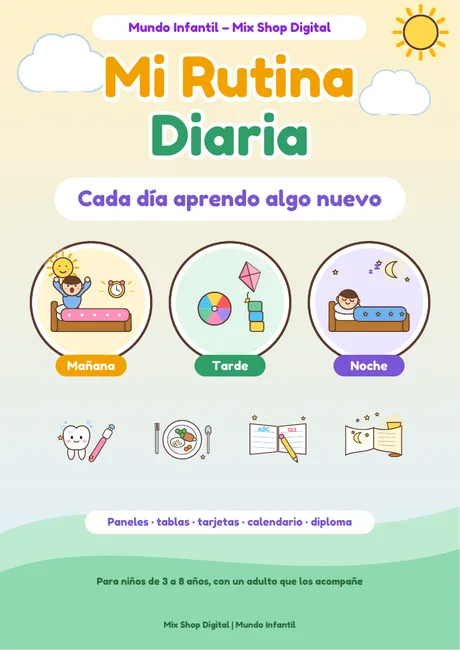
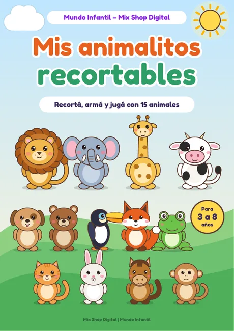
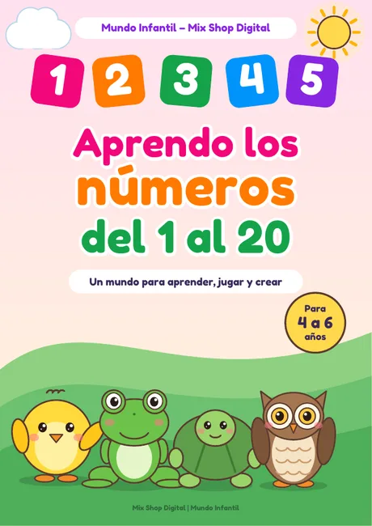
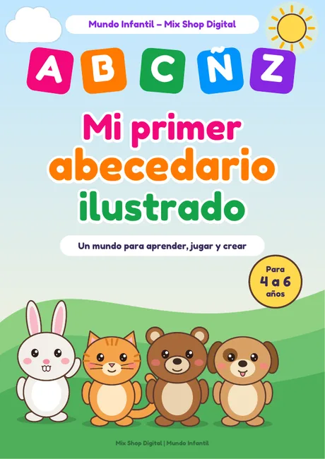

Memotest de animales
Tarjetas de animales para imprimir, recortar y jugar a encontrar las parejas, sin turnos ni ganadores.
- Para recortar
- Hoja A4
Un mundo para aprender, jugar y crear. Elegí la edad y descargá cuadernos, cuentos, recortables, laberintos y hasta un libro para conocer Paraguay. Todo gratis, listo para imprimir en hoja A4.
Tarjetas de animales para imprimir, recortar y jugar a encontrar las parejas, sin turnos ni ganadores.

Paneles de mañana, tarde y noche con tabla semanal, para crecer en autonomía de a poquito.

15 animales para recortar y armar, con tres escenarios de juego: granja, selva y naturaleza. Con supervisión de un adulto.

Juego online para celular, tablet o computadora: tres niveles, cronómetro y movimientos. Sin descargar nada.

Cinco amigos para colorear: Tito, Luna, Rani, Yaguá y Tuti.

Cinco cuentos ilustrados cortitos para leer juntos.

Un cuaderno ilustrado para contar, trazar y reconocer los números del 1 al 20.

Las 27 letras con dibujos, trazos y juegos para aprender el abecedario.

Para reconocer y contar cómo se sienten cada día, con un adulto que los acompañe.

Desafíos para pequeños exploradores en tres niveles, con las soluciones al final.

Cinco cuentos ilustrados con aventuras de Tito, Rani, Yaguá y Tuti.

Historias con valores: compartir, decir la verdad, la paciencia, la amistad. Cada una con preguntas y una actividad.

Mapa, departamentos y capitales, símbolos patrios, guaraní, animales, tradiciones, actividades y diploma.
Sí. No pedimos registro ni datos: descargás el PDF y listo.
Cada material indica la edad recomendada. Son orientativas: conocés mejor que nadie a tu hijo o a tu alumno. Los más chiquitos disfrutan siempre acompañados por un adulto.
Sí. Los recortables usan tijera, así que deben hacerse con supervisión de un adulto, con tijeras de punta redonda para chicos.
Sí, todas las veces que quieras para tu casa o tu aula. No está permitido venderlos ni subirlos a otros sitios; para compartirlos, pasá el enlace de esta página.
Solo para abrir la página. Después de cargada funciona sin conexión y no tiene publicidad.